公有云：(3)公有云CCE集群操作案例
案例描述
本案例是讲述对华为云公有云平台上公有云CCE集群服务组件服务的使用和运维。
案例一：云容器引擎
基础准备
准备一个华为云公有云平台账号，并充值部分金额。并在华为云公有云中购买一个CCE容器云集群。
案例实施
购买云容器引擎CCE
（1）云容器控制台单击右上角控制台选项进入后台，选择“服务列表→容器服务→云容器引擎CCE”。
图1
（2）购买CCE集群单击CCE集群“创建”按钮。
图2
选择计费模式为按需计费，设置集群名称为kcloud，集群版本选择V1.19，集群管理规模根据需求自行选择需要多少个节点。控制节点数量根据集群要求选择3个，虚拟私有云网络为节点网络，选择为intnet1网络和subnet1子网。
图3
选择容器网络模型，每个节点中可分配的pod实例数目上限为256，容器网段不与节点网段冲突即可。
图4
单击“下一步：创建节点”按钮，现在添加集群节点，规格选择4vCPU、8G内存。
图5
使用公共镜像EulerOS 2.8镜像，系统盘和数据盘根据需求进行选择，集群子网所在子网选择subnet1。

图6
配置登录方式为密码登录，设置密码为Abc@1234，点击kubernetes高级配置，设置节点最大实例数，防止管理过多容器Pod而负荷过高。
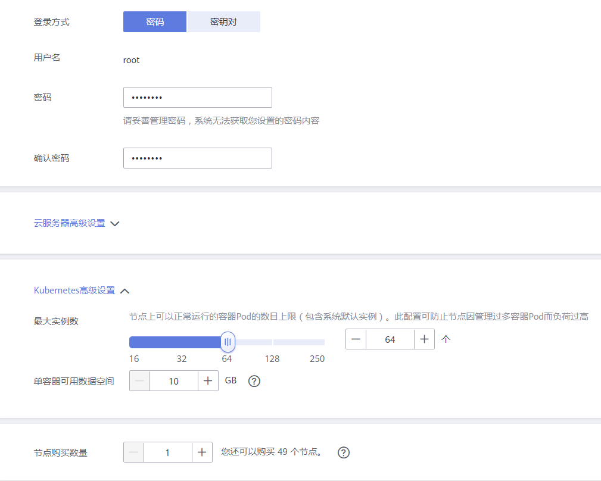
图7
选择安装插件，也可在创建完成后添加需求插件。
图8
勾选“我已知晓上述限制”复选框，然后单击“提交”按钮即可完成配置创建容器集群。
图9
等待6-10分钟即可完成集群创建。可以在“云容器引擎→资源管理→集群管理”中查看到集群状态。

图10
管理CCE集群
（1）集群绑定弹性IP地址登录华为云官网，选择“服务列表→网络→弹性公网IP”进入网络控制台，购买一个弹性公网IP。单击右上角的“购买弹性公网IP”按钮，计费模式选择按需计费，线路选择静态BGP,公网宽带选择按流量计费，宽带大小选择5，然后单击“立即购买”按钮，如图11所示：
图11
打开“网络控制台→弹性公网IP和带宽→弹性公网IP地址”，查看购买的弹性公网IP。
图12
点击弹性公网IP后“绑定”按钮，将其绑定在kcloud容器集群的节点上。
图13
打开“云容器引擎→资源管理→节点管理”，单击节点后的“更多”按钮，在下拉菜单中选择“同步节点信息”即可更新公网IP地址。
图14
（2）安装dashboard插件打开“云容器引擎→插件管理”，找到dashboard插件，单击下方的“安装插件”按钮，安装dashboard插件。
图15
选择集群kcloud和支持鲲鹏集群插件版本2.0.10。
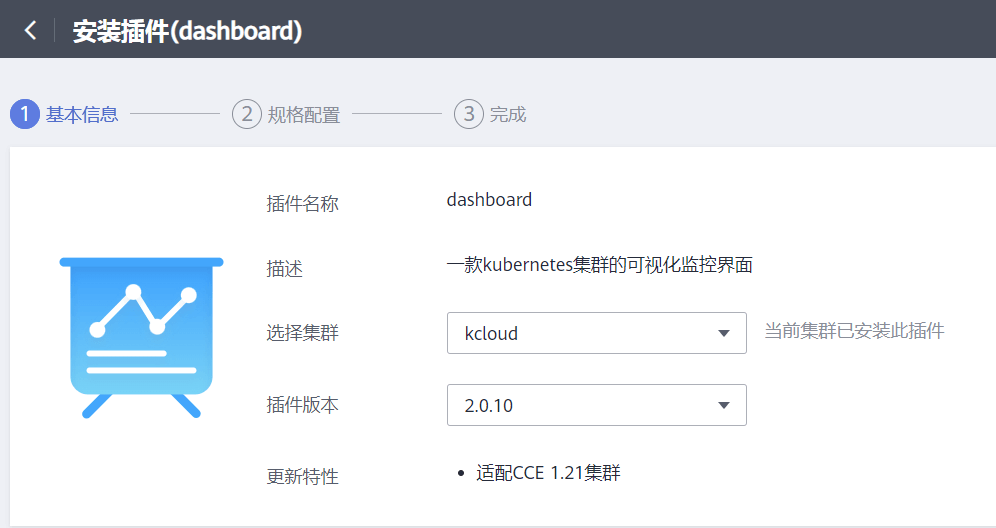
图16
取消证书配置，然后单击“安装”按钮，等待一段时间后即可使用。
图17
在“插件管理→插件实例”中可以找到运行中的dashboard实例，单击其名称进入插件实例详情。
图18
可以看到其访问地址，单击地址即可访问，需要的token值在下方框中单击后面的”复制“按钮。
图19
将token粘贴至下方框中，单击”登录“即可访问dashboard页面。
图20
dashboard首页
图21
（3）安装autoscaler插件打开插件管理页面，找到autoscaler插件，单击”安装插件“按钮。
图22
选择集群kcloud，选择插件版本。单击”下一步“按钮。
图23
选择插件规格为单实例，单击”安装“按钮。
图24
安装完成查看状态为运行中。
图25
案例二：集群运维与管理
基础准备
准备一个华为云公有云平台账号，并充值部分金额。并在华为云公有云中购买一个CCE容器云集群。
案例实施
工作负载
（1）创建nginx工作负载左侧导航栏单击“工作负载→有状态负载”，单击右上角”创建一个有状态工作负载“按钮。
图26
设置工作负载名称nginx，选择kcloud集群和default命名空间，实例数量为2个。
图27
添加容器，选择开源镜像中心nginx，单击”确定“按钮。
图28
镜像版本使用latest，容器名称可自定义配置。容器规格根据所需要求进行配置。
图29
服务名称配置为nginx-headless，端口名称为nginx，使用容器80端口。单击”添加服务“按钮，配置访问方式为节点访问，容器端口80，将自动生成改为指定端口，访问端口为30080。
图30
单击”创建“按钮，创建nginx工作负载。
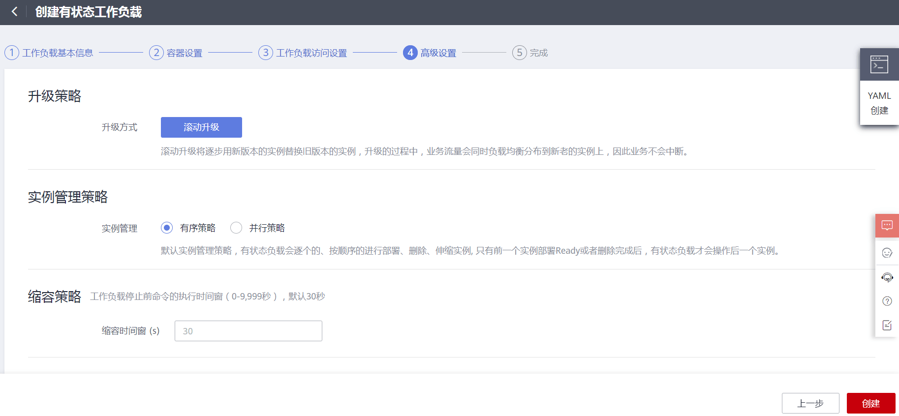
图31
等待一段时间后，左侧导航栏选择“工作负载→有状态负载”，可以看到工作负载状态为运行中。
图32
浏览器访问容器集群弹性IP的30080端口（http://IP:30080），访问所创建的nginx服务。
图33
（2）升级nginx工作负载在有状态负载控制台，单击工作负载后的“升级”按钮，进入升级页面。
图34
选择要升级后的镜像版本，选择后单击”提交“按钮即可。注意：不同区域之间可能会出现版本号不同的情况，可以根据实际要求自行选择。
图35
选择“有状态负载→工作负载名称（nginx）”，可以看到容器正在升级升级过程中不会影响正常访问nginx，在保证服务正常使用下依次升级容器。
图36
升级完成后两个容器都显示运行中状态。
图37
（3）更换工作负载镜像也可升级工作负载使用其他镜像，在升级页面点击更换镜像按钮，选择使用httpd镜像进行升级。
图38
升级完成后查看容器运行状态。
图39
使用访问地址进行访问，将不再是nginx提供服务，而是换为httpd服务。
图40
（4）伸缩容器打开有状态负载控制台，点击工作负载后面的“更多”按钮，在下拉菜单中选择”伸缩”功能。
图41
进入伸缩信息页面，单击手动伸缩实例数后面的“修改”按钮。
图42
修改实例数为4个，单击“保存”按钮。
图43
等待几秒钟后可以查看实例列表中运行实例数为4个。
图44
资源管理
（1）集群管理打开“集群管理控制台→资源管理→节点管理”，单击右上角kcloud集群的“购买节点”按钮，添加一个节点。
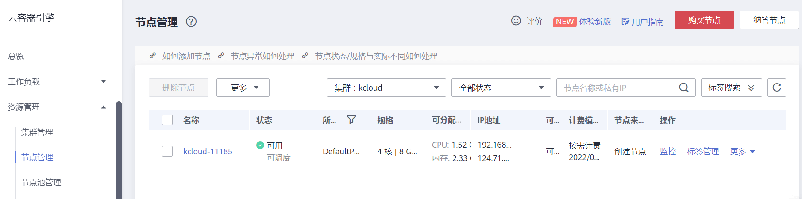
图45
选择按需计费，规格选择4vCPU、16GB内存。
图46
选择子网subnet1，密码配置为Abc@1234。
图47
选择菜单栏中的节点管理，可以查看当前所创建的节点信息。
图48
（2）节点池管理选择“资源管理→节点池管理”，创建节点池。
图49
配置节点池名称，节点数上限为3个，下限是0，弹性缩容冷却时间为15分钟，选择节点规格是4vCPU、16Gb内存。
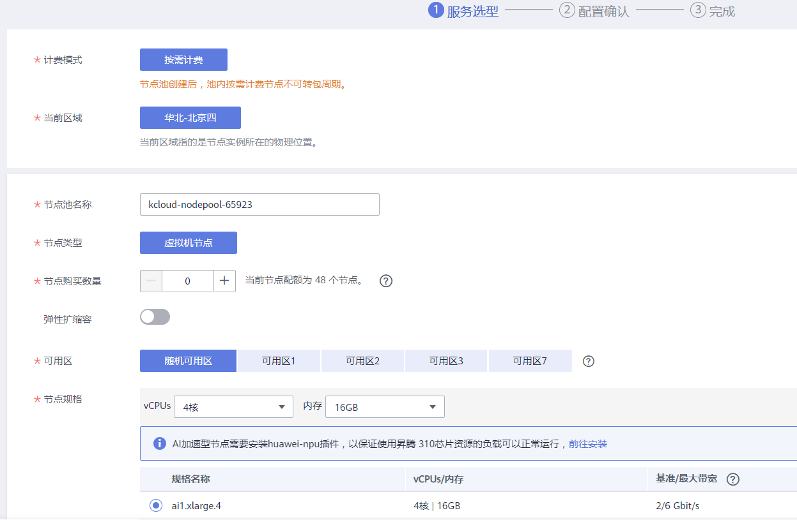
图50
选择子网subnet1，配置登录方式为密码，配置密码为Abc@1234。
图51
创建完成后，可以在节点池管理中查看到所创建的节点池信息。
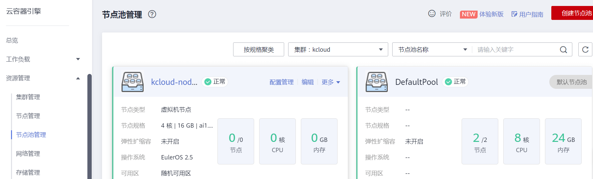
图52
（3）网络管理选择菜单栏“资源管理→网络管理”，单击“添加service”按钮，选择负载均衡。
图53
配置service名称为nginx-lb，此service作为nginx的lb访问地址，选择关联nginx工作负载，服务亲和为集群级别。负载均衡配置为公网访问。
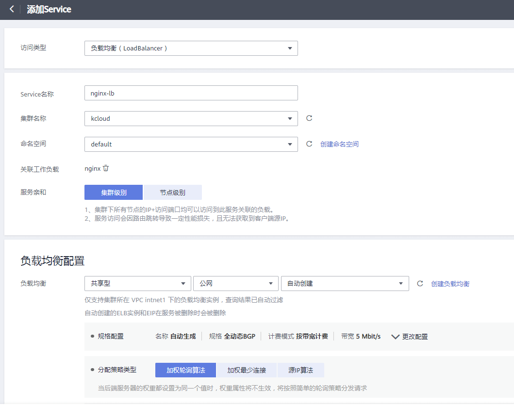
图54
配置策略类型为加权轮询算法，不启用会话保持，启动健康检查，配置容器端口为80，访问端口为30081。
图55
创建完成后，可以在网络管理控制台中查看到此service的公网访问IP地址。
图56
单击公网IP地址，通过web浏览器访问此IP地址。
图57
（4）命名空间选择菜单栏中“资源管理→命名空间”，进入命名空间控制台，在kcloud集群中创建kcloud-nginx命名空间。
图58
资源类型配额如果是0则表示不进行限额。
图59
创建完成后，可以在命名空间列表中查看到所创建的命名空间kcloud-nginx。
图60
弹性伸缩
（1）节点伸缩打开弹性伸缩控制台，创建节点伸缩策略。
图61
配置策略名称nodes，关联所创建的节点池，配置添加策略。cpumax：当CPU分配率大于60%，增加一个节点。rammax：当内存分配率大于70%，增加一个节点。
图62
创建完成后，可以在弹性伸缩列表中查看到所创建的伸缩配置。
图63
定义镜像
（1）创建组织选择页面“服务列表→容器服务→容器镜像服务SWR“，单击”创建组织“按钮，创建组织名称（名称不能与任何组织相同）。
图64
（2）上传镜像单击”上传镜像“按钮，选择所创建的组织，选择提供的镜像文件httpd-2.4.33.tar和httpd-2.4.35.tar，单击”开始上传”按钮。
图65
单击“我的镜像”菜单，可以查看到所上传的httpd镜像和对应版本信息。
图66
（3）创建deployment选择页面”服务列表→容器服务→云容器引擎CCE“，选择“工作负载→无状态负载”，单击“创建无状态工作负载”按钮，创建一个deployment。
图67
设置工作负载名称为httpd，选择kcloud集群，单击“下一步”按钮。
图68
单击“添加容器”按钮，在我的镜像中可以查看到所上传的httpd镜像，在镜像后可以选择对应版本，这里选择2.4.33版本。
图69
单击“添加服务”按钮，添加一个访问方式为节点访问，容器端口为80的服务。然后单击“下一步”按钮后创建deployment。
图70
返回无状态负载控制台可以查看到所创建的工作负载信息。
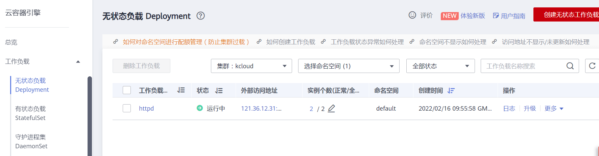
图71
（4）创建Ingress页面左侧菜单栏选择”资源管理→网络管理“，找到Ingress选项，单击“添加Ingress”按钮。
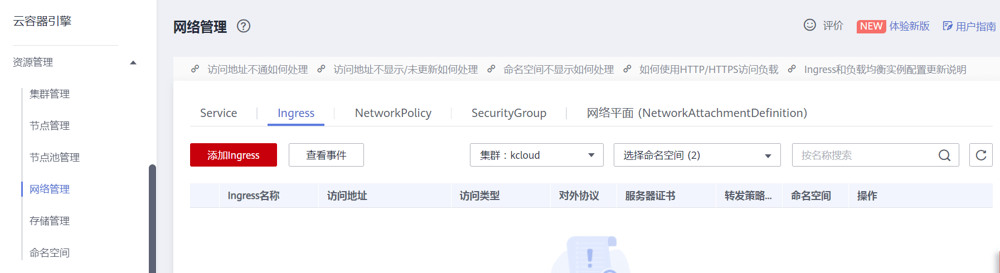
图72
配置名称为http，选择kcloud集群default命名空间，配置负载均衡为公网访问，自动创建即可。监听器配置协议为http，对外端口为80。在转发策略配置URL处填写/，选择目标Service为httpd。
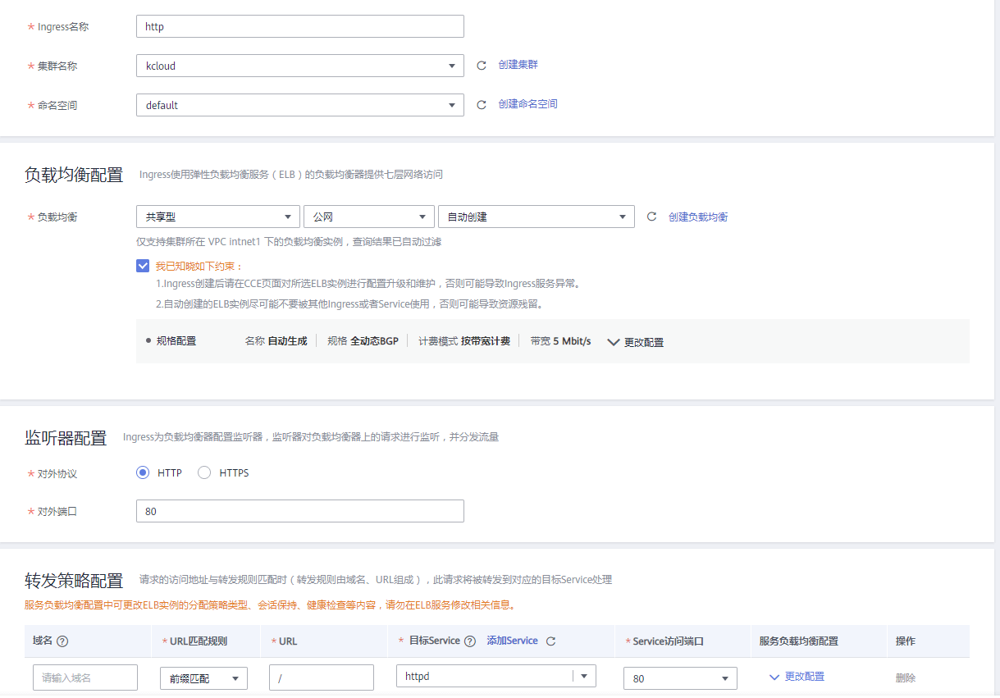
图73
单击“创建”按钮后，等待一段时间刷新浏览器，可在网络管理控制台查看Ingress。
图74
访问Ingress的外部访问地址即可访问到所创建的deployment的httpd服务。
图75
案例三：集群运维与管理进阶
基础准备
准备一个华为云公有云平台账号，并充值部分金额。并在华为云公有云中购买一个CCE容器云集群。
案例实施
部署istio服务网格
选择左侧导航栏”服务列表→容器→应用服务网格ASM“，购买istio服务网格。
图76
选择专用网格和kcloud容器CCE集群。
图77
选择高可用环境节点配置，并设置主机节点密码。
图78
购买完成后等待安装。
图79
安装istioctl命令行工具
首先打开“云容器引擎CCE→资源管理→集群管理”，查看kcloud节点公网IP，通过CRT 连接，然后再打开集群管理，根据提示安装kubectl命令。
图80
下载kubectl配置文件并上传至集群节点/root目录下。
图81
并执行以下命令。
注意：在使用SecureCRT登录CCE集群时如果出现连接不成功问题，请使用高版本的SecureCRT工具。
1 | [root@kcloud-20256 ~]# mkdir -p $HOME/.kube |
选择“应用服务网格→网格管理”，可查看所安装的服务网格版本为1.8.4。
图82
上传istio-1.8.4-linux-amd64.tar.gz软件包至kcloud集群节点中。
1 | [root@kcloud-20256 ~]# tar -zxvf istio-1.8.4-linux-amd64.tar.gz |
安装helm工具
上传helm-v3.3.0-linux-amd64.tar.gz软件包至kcloud集群节点中。
1 | [root@kcloud-20256 ~]# tar -zxf helm-v3.3.0-linux-amd64.tar.gz |
部署wordpress平台
（1）购买mysql工作负载首先打开“云容器引擎CCE→工作负载→无状态负载”，创建工作负载。
图83
设置工作负载名称为mysql，选择所要创建的kcloud集群环境。
图84
选择开源镜像中心，搜索mysql镜像，添加mysql镜像5.7。
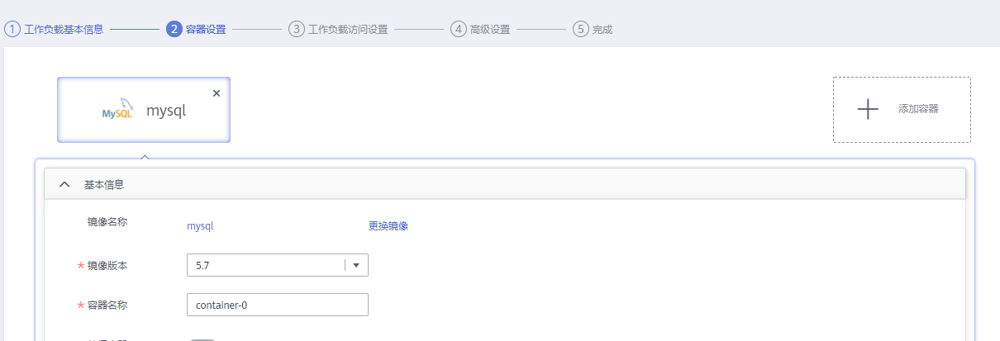
图85
设置环境变量。
图86
访问类型选择集群内访问（ClusterIP），服务名称设置为mysql，容器端口和访问端口都配置为3306。
图87
单击”确定“按钮并完成创建，等待工作负载状态为运行中即可。
图88
（2）创建wordpress工作负载设置工作负载名称为wordpress，选择kcloud容器集群。
图89
进入开源镜像中心，搜索wordpress镜像，镜像版本选择php7.3。
图90
设置环境变量，设置数据库访问地址，可在创建的mysql工作负载中查询到。其他变量与mysql工作负载中的变量设置一致。
图91
设置访问服务为节点访问，名称为wordpress，开放容器端口80对应访问端口为手动指定31312端口。
图92
单击”创建“按钮后，等待状态为运行中即可。
图93
（3）完成wordpress安装点击外部访问地址，跳转至选择安装语言界面。
图94
设置wordpress站点信息，完成安装配置。
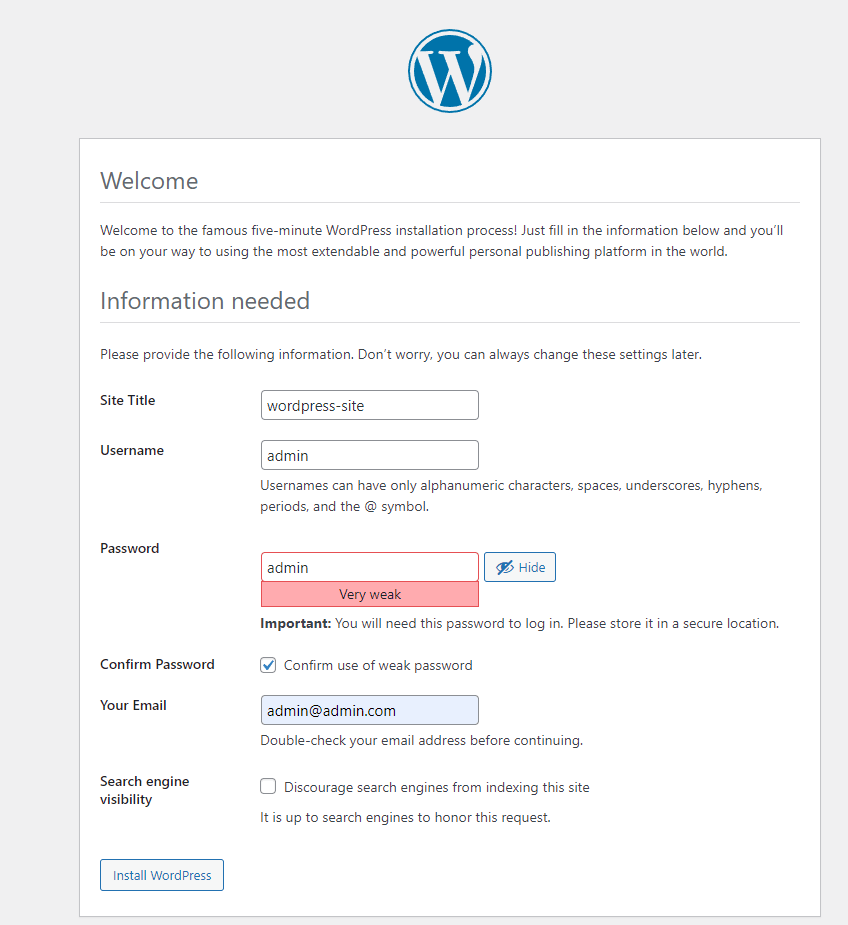
图95
登录wordpress平台。
图96